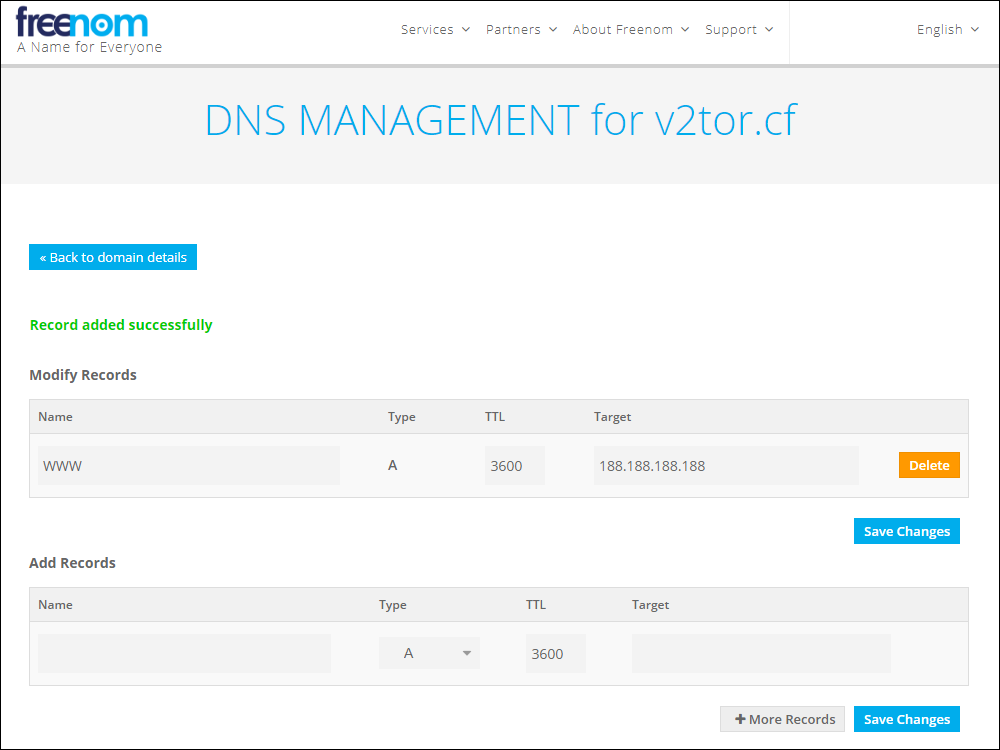

September 27, 2019
Tor offers protection against many forms of tracking and surveillance. Its official site is at https://www.torproject.org. However, Tor is blocked in certain countries. It can be useful to have a bridge to Tor that works from inside these countries.
You can use V2Ray to build such a bridge. V2Ray is a multi-featured proxying utility. You can find the official V2Ray manual at https://www.v2ray.com. V2RayN is the graphical user interface (GUI) for V2Ray for Windows PC users. Its Github repository is at https://github.com/2dust/v2rayN.
This post shows you how to create a bridge from V2RayN on a Windows PC to the Tor network.
A couple of other ways to use this post:
vmess:// URL, you can import it directly into V2RayN with the menu option 服务器 > 从剪贴板导入批量URL (Servers > Import bulk URLs from clipboard). You then just need to configure Firefox to use the V2RayN proxy, as shown in step 13 below.This Tor bridge server in this post was tested with V2RayN on Windows. It did not work with V2RayNG on Android, but it did work with BifrostV on Android.
Start by registering a domain name for your web site. We will use a free name from https://www.freenom.com, and the example domain name used in the rest of this post will be v2tor.cf.
Obtain a Debian 10 virtual private server (VPS). Some popular providers are Bandwagon Host (搬瓦工) and Google Compute Engine (GCE), but you can use a different VPS provider if you prefer.
Note down the server's IP address. We will use as an example the IP address 188.188.188.188.
Back at your domain name registrar, which for us is https://www.freenom.com, add a DNS A record pointing from your server host name (e.g. www, type A, time-to-live 3600 seconds) to your server IP address (e.g. 188.188.188.188). Save these changes.

SSH into your server from a terminal emulator (from Linux or macOS) or a tool such as PuTTY, NetSarang XSHELL, or PowerShell (from Windows). If your DNS records have had time to propagate, you can use the server's hostname. For example:
ssh root@www.v2tor.cf
Otherwise, you must use the server's IP address. For example:
ssh root@188.188.188.188
Start by getting your server's existing software packages up to date:
apt update
apt upgrade
Change the password to something only you know:
passwd root
The Bottleneck Bandwidth and Round-trip propagation time (BBR) congestion control algorithm tracks a connection's delivery rate and round-trip time to offer higher throughput and lower queueing delays where there are network bottlenecks. BBR has been supported by Linux since kernel version 4.9. Since Debian 10 is based on Linux kernel 4.19, we can use it here. Create a local system control parameters file:
vi /etc/sysctl.d/local.conf
Press the i key on your computer keyboard to enter insert mode. Insert the lines that specify the BBR congestion control algorithm:
net.core.default_qdisc=fq
net.ipv4.tcp_congestion_control=bbr
Also add lines to increase the maximum number of open files, the buffer sizes, and so on:
fs.file-max = 51200
net.core.rmem_max = 67108864
net.core.wmem_max = 67108864
net.core.rmem_default = 65536
net.core.wmem_default = 65536
net.core.netdev_max_backlog = 4096
net.core.somaxconn = 4096
net.ipv4.tcp_syncookies = 1
net.ipv4.tcp_tw_reuse = 1
net.ipv4.tcp_fin_timeout = 30
net.ipv4.tcp_keepalive_time = 1200
net.ipv4.ip_local_port_range = 10000 65000
net.ipv4.tcp_max_syn_backlog = 4096
net.ipv4.tcp_max_tw_buckets = 5000
net.ipv4.tcp_fastopen = 3
net.ipv4.tcp_rmem = 4096 87380 67108864
net.ipv4.tcp_wmem = 4096 65536 67108864
net.ipv4.tcp_mtu_probing = 1
Press the Esc key on your computer keyboard followed by :wq to write the file to disk and quit the editor. Activate these changes:
sysctl -p /etc/sysctl.d/local.conf
Edit security limits configuration file:
vi /etc/security/limits.conf
Before the end of file, add lines to increase limits on number of files to 51200:
* soft nofile 51200
* hard nofile 51200
Write the file to disk, and quit the editor.
Set current limit on number of files to 51200 by issuing the command:
ulimit -SHn 51200
Edit the permanent profile:
vi /etc/profile
Add a line to set the permanent limit on number of files to 51200:
ulimit -SHn 51200
Write the file to disk, and quit the editor.
If your VPS hostname is not yet set to your chosen hostname, then set it now:
hostnamectl set-hostname www.v2tor.cf
Add the actual hostname to your /etc/hosts file.
vi /etc/hosts
Add a new line:
127.0.0.1 www.v2tor.cf
Write the file to disk, and quit the editor.
Reboot to make the hostname change effective:
reboot
You may need to wait several minutes for the server to fully reboot, otherwise you will get a Connection refused message. When the reboot is complete, log on to your server again:
ssh root@www.v2tor.cf
Verify that your tuning changes have persisted across reboots:
hostname
sysctl net.ipv4.tcp_congestion_control
Enable and start nftables:
apt install nftables
systemctl enable nftables
systemctl start nftables
nft list ruleset
You should see a table for inet filter, plus chains within it for input, forward, and output. If this table and its chains do not exist, then create them.
Add a rule to accept all related and established traffic:
nft add rule inet filter input ct state related,established counter accept
Add a rule to accept all loopback interface traffic:
nft add rule inet filter input iif lo counter accept
Whitelist your own IP address for access to SSH. You will need to substitute in the actual public IP address of your workstation. You can get your workstation's public IP address by opening a browser and visiting a site such as https://whatismyipaddress.com or https://www.ipip.net/ip.html. The command below uses an example workstation IP address of 11.22.33.44, which is represented in classless interdomain routing (CIDR) notation as 11.22.33.44/32. If you do not have a fixed IP address, but your IP address always comes from a certain block, you can substitute a CIDR range such as 11.22.00.00/16. In some cloud providers, you must also open port 22 in the VPS's Security Group.
nft add rule inet filter input tcp dport 22 ip saddr 11.22.33.44/32 counter accept
Also accept HTTP and HTTPS traffic:
nft add rule inet filter input tcp dport {80, 443} counter accept
Drop any unexpected traffic:
nft add rule inet filter input counter drop
Check that the rules now look as expected:
nft list ruleset
To persist these changes across reboots, save your rules to /etc/nftables.conf:
nft list ruleset > /etc/nftables.conf
We are going to use Nginx for our web server. We opened the firewall for HTTP and HTTPS in the preceding step. Now install the Nginx web server:
apt install nginx
systemctl enable nginx
systemctl start nginx
Edit the main Nginx configuration file:
vi /etc/nginx/nginx.conf
Uncomment the line that turns off server tokens:
server_tokens off;
Write the file to disk, and quit the editor.
Edit the default site for Nginx:
vi /etc/nginx/sites-available/default
Put your real server name. In our example, that is:
server_name www.v2tor.cf;
Write the file to disk, and quit the editor.
Restart the web server:
systemctl restart nginx
Verify that the service is running with the following command:
systemctl status nginx
You should see a status of active (running).
Now create your web site content in the /var/www/html directory. For the sake of this post, we will use some sample content:
apt install wget zip unzip
wget https://github.com/arcdetri/sample-blog/archive/master.zip
unzip master.zip
cp -rf sample-blog-master/html/* /var/www/html/
When you have added your content, you can open a browser and visit the HTTP version of your website to confirm that your web server is working. In our example, this would be:
http://www.v2tor.cf
Now install the Let’s Encrypt certificate bot:
apt install certbot python-certbot-nginx
Now request an SSL certificate:
certbot --nginx
In response to the prompts, answer the questions:
a for agreey or n for emails, as you prefer12Continuing to use the hostname www.v2tor.cf as our example, Certbot places the certificates and key in:
/etc/letsencrypt/live/www.v2tor.cf/fullchain.pem/etc/letsencrypt/live/www.v2tor.cf/privkey.pemSet up Certbot to automatically renew the certificate every three months. The following line will add a cron job to the default crontab.
certbot renew --dry-run
Inspect /etc/nginx/sites-available/default:
less /etc/nginx/sites-available/default
Notice that Certbot has automatically amended the default site definition so that:
Press the q key on your computer keyboard to quit less.
You can test all this by visiting the HTTPS version of your site in a browser. E.g.:
https://www.v2tor.cf
Now you can add your domain to a Content Distribution Network (CDN). We will use Cloudflare in this example. Open a browser and visit https://www.cloudflare.com.
v2tor.cfThere are two nameservers, and they will look something like edwina.ns.cloudflare.com and freddie.ns.cloudflare.com.
Copy the Cloudflare nameservers across to your registrar. In our example of https://www.freenom.com, the process would be:
Back on the Cloudflare site, click the button saying you have changed your nameservers and they can now be checked. You will see a message telling you to wait a few hours until your changes have been successfully propagated and checked.
Once you have waited the required length of time, open a command prompt on your workstation (a Windows PC in this example) and check your server's apparent IP address by issuing the command:
nslookup www.v2tor.cf
Instead of your server's actual IP address, the above command should now show Cloudflare IP addresses. These are listed at https://www.cloudflare.com/ips/.
So far, we have an ordinary web site. Now we will configure the web server to pass traffic to V2Ray when the client issues a request for a secret directory. On your server, create your secret directory name with the command:
head /dev/urandom | tr -dc a-z0-9 | head -c 16 ; echo ''
You will get a result such as:
1ufkol64mtl17s79
We will use 1ufkol64mtl17s79 as our example secret directory when we configure V2Ray, Nginx, and V2RayN in a moment.
To install V2Ray, download and execute the V2Ray installation script:
wget https://install.direct/go.sh
bash go.sh
A default PORT and UUID are displayed toward the end of the install. The UUID is effectively a password and will need to be known by the client when we set it up. They will look something like this:
PORT:40659
UUID:a9b0d719-acdf-4672-a16c-433c508801d0
Edit the V2Ray configuration file /etc/v2ray/config.json:
vi /etc/v2ray/config.json
In the inbound specification, after the port number line, add a new line to specify that V2Ray should listen on localhost:
"port": 40659,
"listen": "127.0.0.1",
After the end of the existing inbound settings section:
streamSettingsThe streamSettings section should look like this. You will need to replace 1ufkol64mtl17s79 by your actual secret directory name.
"streamSettings": {
"network": "ws",
"wsSettings": {
"path": "/1ufkol64mtl17s79/"
}
}
Write the file to disk, and quit the editor.
Start V2Ray with your revised configuration file:
systemctl start v2ray
Edit the default site configuration file:
vi /etc/nginx/sites-available/default
Inside the server block, pass traffic from Nginx to V2Ray. Replace 1ufkol64mtl17s79 by your actual secret directory name. You will also need to replace 40659 by the port number V2Ray is listening on.
location /1ufkol64mtl17s79/ {
proxy_redirect off;
proxy_pass http://127.0.0.1:40659;
proxy_http_version 1.1;
proxy_set_header Upgrade $http_upgrade;
proxy_set_header Connection "upgrade";
proxy_set_header Host $http_host;
}
Write the file to disk, and quit the editor.
Restart Nginx with these configuration changes:
systemctl restart nginx
In a browser on your PC, check that you can still visit your website:
https://www.v2tor.cf
We will use the example of a Windows 10 PC, the V2RayN client, and the Firefox browser for the initial test of the V2Ray server. You can alternatively test the server using an Android client running BifrostV or V2RayNG.
Download and install the latest release of v2rayN-Core.zip from:
https://github.com/2dust/v2rayN/releases
Extract files from the downloaded v2rayN-Core.zip file.
Go into the v2rayN-Core folder, and launch the application v2rayN.exe.
In the system tray, which is at the bottom right of your Windows desktop, click the V2RayN icon to open the V2RayN control panel.
Click the menu bar item for Servers (服务器), and select the first option, which is the one for Add VMess server (添加VMess服务器).
Enter the values, which for us in this example would be:
www.v2tor.cf443a9b0d719-acdf-4672-a16c-433c508801d064autowsnonewww.v2tor.cf/1ufkol64mtl17s79/tlstrueClick the Open (确定) button.
V2RayN saves its GUI configuration parameters in guiNConfig.json. From the parameters entered in the GUI, it generates a V2Ray configuration, which it saves in config.json.
If you do not already have Firefox, then install it now from https://www.mozilla.org.
Launch Firefox.
127.0.0.110808 (the latest releases of V2RayN use port 10808 instead of port 1080)1. Check that everything is working by visiting in Firefox:
You should see the IP address and location of your V2Ray server.
2. Shut down V2RayN by right-clicking on its icon in the system tray and selecting the quit option (退出). Set Firefox back to Use system proxy settings. Check that your website (https://www.v2tor.cf in our example) still appears to be a normal website.
If you stop at this point, you will have a fully functioning V2Ray server without the final output to Tor.
We will now route traffic on the server from V2Ray to Tor. First, install the prerequisite for Tor:
apt install apt-transport-https
Now edit your package sources list:
vi /etc/apt/sources.list
Add the two entries:
deb https://deb.torproject.org/torproject.org buster main
deb-src https://deb.torproject.org/torproject.org buster main
Write the file to disk, and quit the editor.
Then add the GPG key used to sign the packages by running the following commands:
apt install gpg
curl https://deb.torproject.org/torproject.org/A3C4F0F979CAA22CDBA8F512EE8CBC9E886DDD89.asc | gpg --import
gpg --export A3C4F0F979CAA22CDBA8F512EE8CBC9E886DDD89 | apt-key add -
Install Tor:
apt update
apt install tor deb.torproject.org-keyring
Tor is now listening for SOCKS input on port 9050.
Finally, we reconfigure V2Ray so that instead of outputting traffic directly, it sends it to the SOCKS proxy on port 9050, which is Tor.
Edit the V2Ray configuration file.
vi /etc/v2ray/config.json
Delete the 2 lines for outbound protocol freedom.
Insert lines for outbound to Tor localhost socks port 9050:
"protocol": "socks",
"settings": {
"servers": [{
"address": "127.0.0.1",
"port": 9050,
"auth": "noauth"
}]
}
systemctl restart v2ray
Your work on the server is now complete:
exit
With V2RayN running on your Windows client, open Firefox, and make sure it is configured to use your V2RayN proxy. Then in Firefox visit:
You should see a message confirming that you are using the Tor network, even if you are not using the Tor browser.